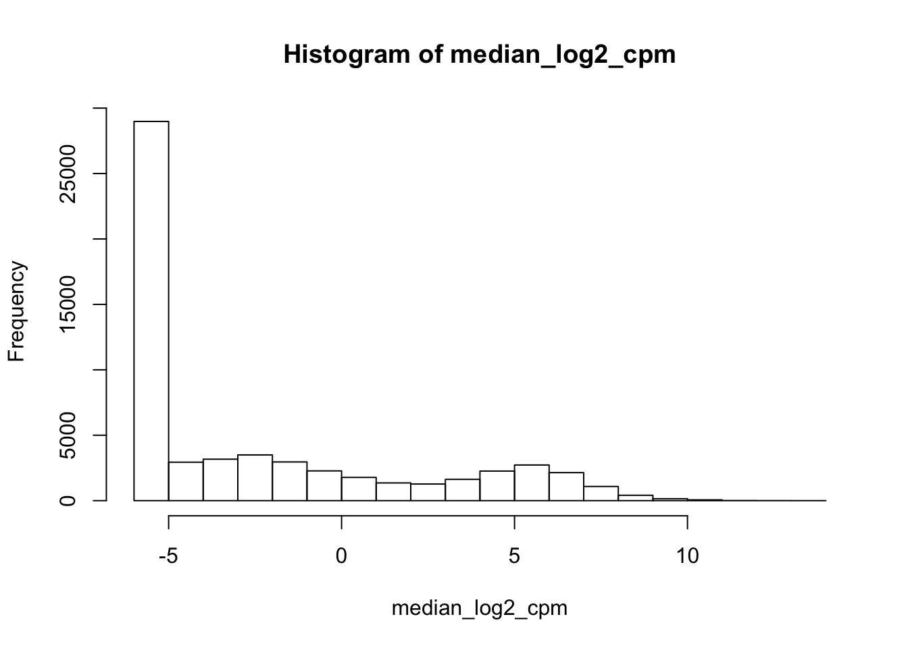
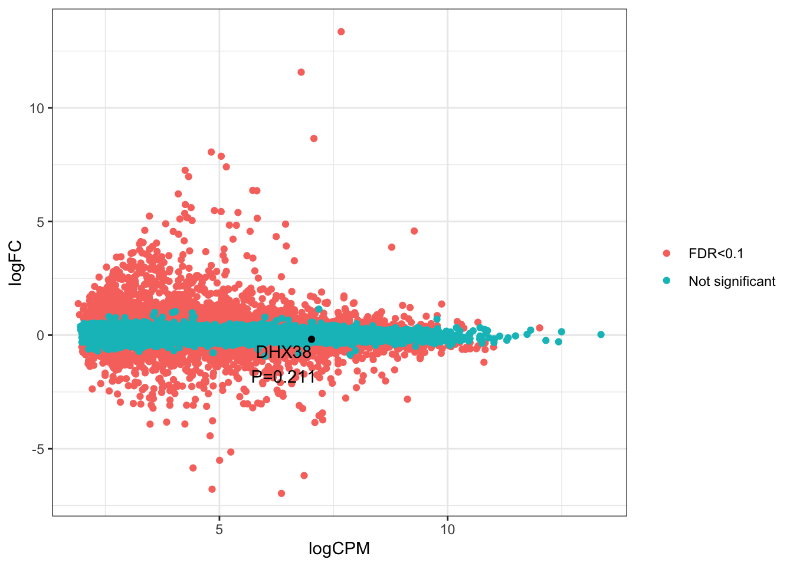
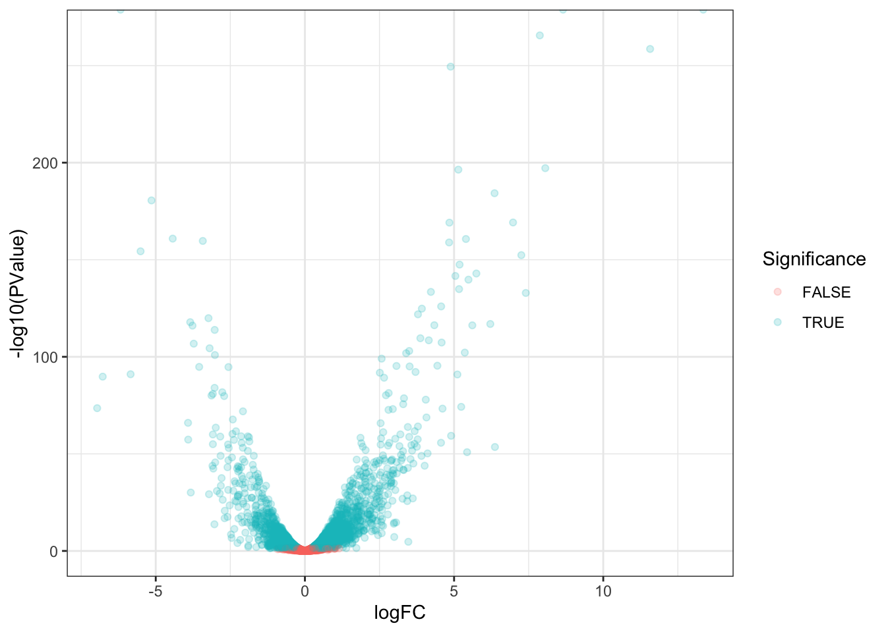
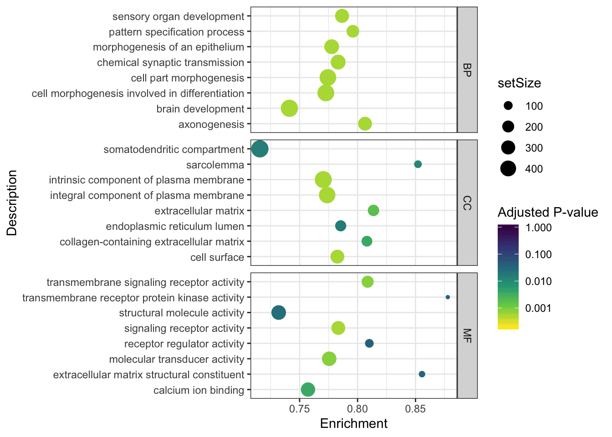
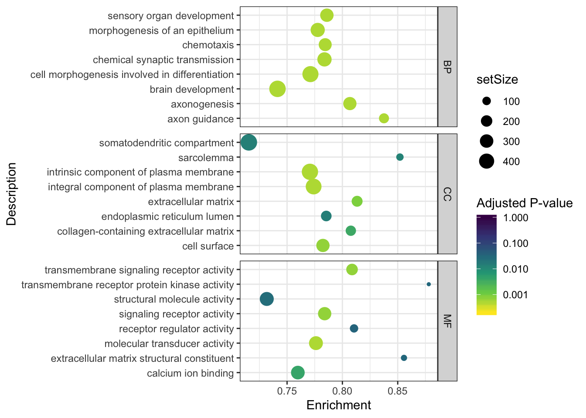

Last updated: 2019-12-16
Checks: 6 1
Knit directory: rna-seq-dhx38/analysis/
This reproducible R Markdown analysis was created with workflowr (version 1.5.0). The Checks tab describes the reproducibility checks that were applied when the results were created. The Past versions tab lists the development history.
The R Markdown file has unstaged changes. To know which version of the R Markdown file created these results, you’ll want to first commit it to the Git repo. If you’re still working on the analysis, you can ignore this warning. When you’re finished, you can run wflow_publish to commit the R Markdown file and build the HTML.
Great job! The global environment was empty. Objects defined in the global environment can affect the analysis in your R Markdown file in unknown ways. For reproduciblity it’s best to always run the code in an empty environment.
The command set.seed(20191126) was run prior to running the code in the R Markdown file. Setting a seed ensures that any results that rely on randomness, e.g. subsampling or permutations, are reproducible.
Great job! Recording the operating system, R version, and package versions is critical for reproducibility.
Nice! There were no cached chunks for this analysis, so you can be confident that you successfully produced the results during this run.
Great job! Using relative paths to the files within your workflowr project makes it easier to run your code on other machines.
Great! You are using Git for version control. Tracking code development and connecting the code version to the results is critical for reproducibility. The version displayed above was the version of the Git repository at the time these results were generated.
Note that you need to be careful to ensure that all relevant files for the analysis have been committed to Git prior to generating the results (you can use wflow_publish or wflow_git_commit). workflowr only checks the R Markdown file, but you know if there are other scripts or data files that it depends on. Below is the status of the Git repository when the results were generated:
Ignored files:
Ignored: .Rhistory
Ignored: .Rproj.user/
Untracked files:
Untracked: analysis/20191216_DifferentialExpression_Splicing.Rmd
Untracked: data/GO_splicing_ids.fromAmiGO_online_search.tab
Untracked: dsdist.
Unstaged changes:
Modified: analysis/20191203_DiffExpression.Rmd
Modified: analysis/20191203_DifferentialSplicing.Rmd
Note that any generated files, e.g. HTML, png, CSS, etc., are not included in this status report because it is ok for generated content to have uncommitted changes.
These are the previous versions of the R Markdown and HTML files. If you’ve configured a remote Git repository (see ?wflow_git_remote), click on the hyperlinks in the table below to view them.
| File | Version | Author | Date | Message |
|---|---|---|---|---|
| Rmd | dbbdff3 | Benjmain Fair | 2019-12-09 | update site |
| html | dbbdff3 | Benjmain Fair | 2019-12-09 | update site |
| Rmd | a0c7627 | Benjmain Fair | 2019-12-09 | update site |
| html | a0c7627 | Benjmain Fair | 2019-12-09 | update site |
| Rmd | c1d660d | Benjmain Fair | 2019-12-04 | initialize site |
| html | c1d660d | Benjmain Fair | 2019-12-04 | initialize site |
Exploratory differential expression analysis comparing RNA-seq from iPSC derived neurons from healthy control vs patient with biallelic mutations in DHX38 that may affect splicing and gene expression. In particular, worth checking whether DHX38 is differentially expressed.
Raw RNA-seq data has been aligned and collapsed into gene count table (rows of genes, columns of samples, each cell is exonic read counts) using code in code section of this repo, creating a count matrix in output. Here I will process that data with edgeR approach that I have used previously.
First, load necessary libraries
library(tidyverse)
library(knitr)
library(edgeR)
library(corrplot)
library(gplots)
library(biomaRt)
library(ggrepel)
library("clusterProfiler")
library("org.Hs.eg.db")
library(enrichplot)And read in the count table
CountTable <- read.table('../output/GeneExpressionCountTable.subread.txt.gz', header=T, check.names=FALSE, skip=1)
CountTable.matrix <- CountTable %>%
dplyr::select(-c("Chr", "Start", "End", "Strand", "Length")) %>%
column_to_rownames("Geneid") %>% as.matrix()
#Preview table
kable(CountTable.matrix[1:10,])| Affected_3 | Healthy_2 | Affected_1 | Affected_2 | Healthy_1 | Healthy_3 | |
|---|---|---|---|---|---|---|
| ENSG00000223972 | 0 | 3 | 2 | 1 | 0 | 1 |
| ENSG00000227232 | 36 | 28 | 59 | 57 | 32 | 38 |
| ENSG00000278267 | 11 | 9 | 13 | 12 | 14 | 18 |
| ENSG00000243485 | 0 | 0 | 0 | 2 | 0 | 0 |
| ENSG00000284332 | 0 | 0 | 0 | 0 | 0 | 0 |
| ENSG00000237613 | 0 | 0 | 0 | 0 | 0 | 0 |
| ENSG00000268020 | 0 | 0 | 0 | 0 | 0 | 0 |
| ENSG00000240361 | 0 | 0 | 0 | 0 | 0 | 0 |
| ENSG00000186092 | 0 | 0 | 0 | 0 | 0 | 0 |
| ENSG00000238009 | 2 | 0 | 0 | 0 | 0 | 0 |
Plot total exonic gene counts per sample
CountTable.matrix %>% colSums() %>% as.data.frame() %>%
rownames_to_column("Sample") %>%
ggplot(aes(x=Sample, y=./1000000)) +
geom_col() +
ylab("Exonic read count (Millions)") +
theme_bw() +
theme(axis.text.x = element_text(angle = 45, hjust = 1))
| Version | Author | Date |
|---|---|---|
| c1d660d | Benjmain Fair | 2019-12-04 |
Check correlations between samples
# CountTable to CountsPerMillion
cpm <- cpm(CountTable.matrix, log=TRUE, prior.count=0.5)
kable(cpm[1:10,])| A | ffected_3 | Healthy_2 A | ffected_1 A | ffected_2 | Healthy_1 | Healthy_3 |
|---|---|---|---|---|---|---|
| ENSG00000223972 | -5.660565 | -2.6130864 | -3.528788 | -4.317617 | -5.6605654 | -3.9519176 |
| ENSG00000227232 | 0.384709 | 0.4444315 | 0.994584 | 0.808530 | 0.8661057 | 0.7857677 |
| ENSG00000278267 | -1.276970 | -1.1494150 | -1.137837 | -1.379587 | -0.3065598 | -0.2739689 |
| ENSG00000243485 | -5.660565 | -5.6605654 | -5.660565 | -3.634338 | -5.6605654 | -5.6605654 |
| ENSG00000284332 | -5.660565 | -5.6605654 | -5.660565 | -5.660565 | -5.6605654 | -5.6605654 |
| ENSG00000237613 | -5.660565 | -5.6605654 | -5.660565 | -5.660565 | -5.6605654 | -5.6605654 |
| ENSG00000268020 | -5.660565 | -5.6605654 | -5.660565 | -5.660565 | -5.6605654 | -5.6605654 |
| ENSG00000240361 | -5.660565 | -5.6605654 | -5.660565 | -5.660565 | -5.6605654 | -5.6605654 |
| ENSG00000186092 | -5.660565 | -5.6605654 | -5.660565 | -5.660565 | -5.6605654 | -5.6605654 |
| ENSG00000238009 | -3.454751 | -5.6605654 | -5.660565 | -5.660565 | -5.6605654 | -5.6605654 |
#plot cpm
median_log2_cpm <- apply(cpm, 1, median)
hist(median_log2_cpm)
| Version | Author | Date |
|---|---|---|
| c1d660d | Benjmain Fair | 2019-12-04 |
# check correlations between samples
CorMat <- cor(cpm)
kable(CorMat)| A | ffected_3 H | ealthy_2 A | ffected_1 A | ffected_2 H | ealthy_1 H | ealthy_3 |
|---|---|---|---|---|---|---|
| Affected_3 | 1.0000000 | 0.9485111 | 0.9698672 | 0.9708302 | 0.9533155 | 0.9456574 |
| Healthy_2 | 0.9485111 | 1.0000000 | 0.9580786 | 0.9588884 | 0.9602608 | 0.9735372 |
| Affected_1 | 0.9698672 | 0.9580786 | 1.0000000 | 0.9798980 | 0.9476967 | 0.9585812 |
| Affected_2 | 0.9708302 | 0.9588884 | 0.9798980 | 1.0000000 | 0.9482039 | 0.9590783 |
| Healthy_1 | 0.9533155 | 0.9602608 | 0.9476967 | 0.9482039 | 1.0000000 | 0.9566276 |
| Healthy_3 | 0.9456574 | 0.9735372 | 0.9585812 | 0.9590783 | 0.9566276 | 1.0000000 |
# Plot
heatmap.2(CorMat, trace="none")
| Version | Author | Date |
|---|---|---|
| c1d660d | Benjmain Fair | 2019-12-04 |
Healthy_1 is sort of an outlier sample, and it is probably because it has the least reads. In my experience, this number of reads is still quite high, and the correlations are quite high, so I am not yet concerned. I think it will look like less of an outlier once we filter out the extremely lowly expressed genes that basically are just represented by the 0.5 pseudocount I added.
# Pick a cutoff for lowly expressed genes to exclude
hist(median_log2_cpm)
expr_cutoff <- 2
abline(v = expr_cutoff, col = "red", lwd = 3)
| Version | Author | Date |
|---|---|---|
| c1d660d | Benjmain Fair | 2019-12-04 |
#How many genes pass this threshold
sum(median_log2_cpm > expr_cutoff)[1] 11730CountTable.matrix.filtered <- CountTable.matrix[median_log2_cpm > expr_cutoff, ]
# Recalculate cpm from filtered count table
cpm <- cpm(CountTable.matrix.filtered, log=TRUE, prior.count=0.5)
# look at correlations from filtered cpm matrix
cor(cpm) %>%
heatmap.2(., trace="none", cexRow=1, cexCol=1)
| Version | Author | Date |
|---|---|---|
| c1d660d | Benjmain Fair | 2019-12-04 |
# Also look at similarity with MDS plot
plotMDS(cpm)
| Version | Author | Date |
|---|---|---|
| c1d660d | Benjmain Fair | 2019-12-04 |
plotMDS(cpm, dim=c(3,4))
| Version | Author | Date |
|---|---|---|
| c1d660d | Benjmain Fair | 2019-12-04 |
samples primarily segregate by condition (healthy vs affected) as expected
Now start prepping data for differential expression analysis
group <- substr(colnames(CountTable.matrix.filtered), 1, 1)
# A for affected, H for healthy
group[1] "A" "H" "A" "A" "H" "H"# y is a DGELIst object contains count table and other metadata
y <- DGEList(counts = CountTable.matrix.filtered, group = group)
# calculate normalization factors using default TMM method which more accurately scales samples with different library sizes, for example while considering that highly expressed genes between conditions can have undesired effects if just using simple CountsPerMillion normalization.
y <- calcNormFactors(y)
y$samples %>% kable()| gr | oup l | ib.size n | orm.factors |
|---|---|---|---|
| Affected_3 | A | 27530199 | 1.0138568 |
| Healthy_2 | H | 20697090 | 0.9721993 |
| Affected_1 | A | 29525851 | 1.0289830 |
| Affected_2 | A | 32513479 | 1.0053212 |
| Healthy_1 | H | 17490838 | 1.0187010 |
| Healthy_3 | H | 22124071 | 0.9627384 |
Now estimate common, trended, and tagwise dispersion, and test for differential expression
#estimate dispersion, common, trended, and tag-wise (a combination of gene-specific dispersion and trend)
y <- estimateDisp(y)Design matrix not provided. Switch to the classic mode.sqrt(y$common.dispersion) # biological coefficient of variation[1] 0.1426326#Plot dispersions
plotBCV(y)
| Version | Author | Date |
|---|---|---|
| c1d660d | Benjmain Fair | 2019-12-04 |
# by default, the tagwise dispersion is used for DE testing.
# Perform testing
et <- exactTest(y, pair=c("H","A"))
results_edgeR <- topTags(et, n = nrow(CountTable.matrix.filtered), sort.by = "none")
head(results_edgeR$table) %>% kable()| logFC | logCPM | PValue | FDR | |
|---|---|---|---|---|
| ENSG00000279457 | -0.0019184 | 2.294509 | 1.0000000 | 1.0000000 |
| ENSG00000248527 | -1.4384558 | 3.327765 | 0.0005842 | 0.0028015 |
| ENSG00000228794 | 0.0824910 | 3.223395 | 0.6820905 | 0.7909175 |
| ENSG00000230699 | 0.5618857 | 2.490896 | 0.0208296 | 0.0580221 |
| ENSG00000188976 | -0.1738289 | 6.991208 | 0.2377004 | 0.3809051 |
| ENSG00000187961 | -0.0084449 | 4.092404 | 0.9652432 | 0.9806255 |
#histogram of nominal P-vals
hist(results_edgeR$table$PValue)
| Version | Author | Date |
|---|---|---|
| c1d660d | Benjmain Fair | 2019-12-04 |
# how many genes below FDR threshold
sum(results_edgeR$table$FDR < .1)[1] 4847#MA plot showing FDR<0.1
plotSmear(et, de.tags = rownames(results_edgeR)[results_edgeR$table$FDR < .01])
abline(h = c(-2, 2), col = "blue")
| Version | Author | Date |
|---|---|---|
| c1d660d | Benjmain Fair | 2019-12-04 |
Ok we did differential testing. Now let’s explore the results
First add common gene names to the results table
#Use biomart to get common gene names and ensembl IDs
human_mart <- useMart("ensembl", dataset="hsapiens_gene_ensembl")
MyBioMartQuery <- getBM(attributes = c("ensembl_gene_id","external_gene_name", "description"), mart=human_mart, filters="ensembl_gene_id", values=rownames(results_edgeR))
results.more.descriptive <- results_edgeR$table %>%
rownames_to_column("ensembl_gene_id") %>%
left_join(MyBioMartQuery, by="ensembl_gene_id")
head(results.more.descriptive) %>% kable()| ensembl_gene_id | logFC | logCPM | PValue | FDR | external_gene_name | description |
|---|---|---|---|---|---|---|
| ENSG00000279457 | -0.0019184 | 2.294509 | 1.0000000 | 1.0000000 | WASH9P | WAS protein family homolog 9, pseudogene [Source:HGNC Symbol;Acc:HGNC:53981] |
| ENSG00000248527 | -1.4384558 | 3.327765 | 0.0005842 | 0.0028015 | MTATP6P1 | MT-ATP6 pseudogene 1 [Source:HGNC Symbol;Acc:HGNC:44575] |
| ENSG00000228794 | 0.0824910 | 3.223395 | 0.6820905 | 0.7909175 | LINC01128 | long intergenic non-protein coding RNA 1128 [Source:HGNC Symbol;Acc:HGNC:49377] |
| ENSG00000230699 | 0.5618857 | 2.490896 | 0.0208296 | 0.0580221 | AL645608.2 | novel transcript |
| ENSG00000188976 | -0.1738289 | 6.991208 | 0.2377004 | 0.3809051 | NOC2L | NOC2 like nucleolar associated transcriptional repressor [Source:HGNC Symbol;Acc:HGNC:24517] |
| ENSG00000187961 | -0.0084449 | 4.092404 | 0.9652432 | 0.9806255 | KLHL17 | kelch like family member 17 [Source:HGNC Symbol;Acc:HGNC:24023] |
#Check if DHX38 is differentially expressed
DHX38.results <- results.more.descriptive %>%
filter(external_gene_name=="DHX38")
kable(DHX38.results)| ensembl_gene_id | logFC | logCPM | PValue | FDR | external_gene_name | description |
|---|---|---|---|---|---|---|
| ENSG00000140829 | -0.1891905 | 7.023741 | 0.1966757 | 0.3311334 | DHX38 | DEAH-box helicase 38 [Source:HGNC Symbol;Acc:HGNC:17211] |
#Plot smear with DHX label
PlotSmear <- results.more.descriptive %>%
mutate(
Significance=case_when(
FDR<0.1 ~ "FDR<0.1",
FDR>0.1 ~ "Not significant",
external_gene_name=="DHX38" ~ "DHX38"),
Label=case_when(
external_gene_name=="DHX38" ~ paste0("DHX38\nP=", signif(DHX38.results$PValue, 3)),
!external_gene_name=="DHX38" ~ ""),
) %>%
arrange(FDR)
DHX38.results <- PlotSmear %>%
filter(external_gene_name=="DHX38")
ggplot(PlotSmear, aes(x=logCPM, y=logFC, color=Significance, label=Label)) +
geom_point() +
geom_point(data=DHX38.results, color="black", show.legend = F) +
geom_text_repel(data=DHX38.results, color="black", show.legend = F) +
theme_bw() +
theme(legend.title = element_blank())
| Version | Author | Date |
|---|---|---|
| dbbdff3 | Benjmain Fair | 2019-12-09 |
Ok good. DHX38 is not differentially expressed. So if the alleles have some affect on splicing through DHX38, is not likely through modulating expression of DHX38 levels, but rather altering function.
Let’s make some plots to get to know significance testing results a little bit more… Keep in mind we don’t know much about the types of replicates these are (technical, versus biological split before differentiation, split after differentiation, etc), and that all these are from a single healthy and a single affected patient.
Volcano plot:
results.more.descriptive %>%
mutate(Significance=FDR<0.1) %>%
ggplot(aes(x=logFC, y=-log10(PValue), color=Significance)) +
geom_point(alpha=0.2) +
theme_bw()
| Version | Author | Date |
|---|---|---|
| c1d660d | Benjmain Fair | 2019-12-04 |
Plot of original results of a significant gene. Useful to check polarization of the logFC values (I think I set up the exactTest function to be such that positive logFC means more highly expressed in affected, but let’s double check that)
Top5DE_Genes <- results.more.descriptive %>%
arrange(FDR) %>% head(5) %>%
pull(ensembl_gene_id)
results.more.descriptive %>%
filter(ensembl_gene_id %in% Top5DE_Genes) %>%
dplyr::select(ensembl_gene_id, external_gene_name, logFC) %>%
kable()| ensembl_gene_id | external_gene_name | logFC |
|---|---|---|
| ENSG00000018625 | ATP1A2 | 8.652522 |
| ENSG00000044524 | EPHA3 | -6.178116 |
| ENSG00000096696 | DSP | 11.571066 |
| ENSG00000196569 | LAMA2 | 7.873084 |
| ENSG00000198300 | PEG3 | 13.352063 |
cpm[Top5DE_Genes,] %>%
as.data.frame() %>%
rownames_to_column("ensembl_gene_id") %>%
gather(key="sample", value="log2cpm", -ensembl_gene_id) %>%
ggplot(aes(x=sample, y=log2cpm)) +
geom_col() +
facet_wrap(~ensembl_gene_id) +
theme_bw() +
theme(axis.text.x = element_text(angle = 45, hjust = 1))
| Version | Author | Date |
|---|---|---|
| c1d660d | Benjmain Fair | 2019-12-04 |
Ok correct, positive FC means higher expressed in affected samples. Now let’s do gene set enrichment analysis (GSEA) to see which types of gene categories are enriched for differentially expressed genes. For this we need an ordered list of genes. We could use absolute value of log-fold change, or maybe -log10(Pvalue). Judging from the volcano plot I’d guess the results would be virtually identical either way
#had to add very small number to Pvalue because very significant genes have Pvalues that are 0
gsea.results <- results.more.descriptive %>%
mutate(RankingMetric = -log10(PValue+1E-300)) %>%
arrange(desc(RankingMetric)) %>%
dplyr::select(ensembl_gene_id, RankingMetric) %>%
deframe() %>%
gseGO(ont="ALL", OrgDb=org.Hs.eg.db, keyType='ENSEMBL', nPerm=500000)Now let’s explore the GSEA results
gsea.results.df <- as.data.frame(gsea.results)
gsea.results.df %>%
group_by(ONTOLOGY) %>%
filter(rank(p.adjust, ties.method="first")<=8) %>%
ggplot(aes(x=enrichmentScore, y=Description, color=p.adjust, size=setSize)) +
geom_point() +
facet_grid(ONTOLOGY~., scales = "free") +
scale_colour_viridis_c(trans="log10", limits=c(2E-4, 1), direction=-1, option="D") +
xlab("Enrichment") +
scale_y_discrete(labels = function(x) lapply(strwrap(x, width = 60, simplify = FALSE), paste, collapse="\n")) +
labs(color = "Adjusted P-value") +
theme_bw()
gsea.results.df %>%
arrange(p.adjust) %>% head(10) %>%
dplyr::select(ID, Description, ONTOLOGY, p.adjust, setSize, enrichmentScore) ID Description ONTOLOGY
1 GO:0000904 cell morphogenesis involved in differentiation BP
2 GO:0002009 morphogenesis of an epithelium BP
3 GO:0005887 integral component of plasma membrane CC
4 GO:0007268 chemical synaptic transmission BP
5 GO:0007389 pattern specification process BP
6 GO:0007409 axonogenesis BP
7 GO:0007420 brain development BP
8 GO:0007423 sensory organ development BP
9 GO:0009986 cell surface CC
10 GO:0031226 intrinsic component of plasma membrane CC
p.adjust setSize enrichmentScore
1 0.0005502598 466 0.7726367
2 0.0005502598 342 0.7776557
3 0.0005502598 445 0.7737560
4 0.0005502598 347 0.7832492
5 0.0005502598 233 0.7959597
6 0.0005502598 288 0.8064676
7 0.0005502598 494 0.7412182
8 0.0005502598 298 0.7866344
9 0.0005502598 290 0.7825923
10 0.0005502598 481 0.7704378gsea.results.df %>%
arrange(desc(enrichmentScore)) %>% head(10) %>%
dplyr::select(ID, Description, ONTOLOGY, p.adjust, setSize) ID
1 GO:0044065
2 GO:0031420
3 GO:0098533
4 GO:0010881
5 GO:0010882
6 GO:0043576
7 GO:0014808
8 GO:1903514
9 GO:0048701
10 GO:0086009
Description
1 regulation of respiratory system process
2 alkali metal ion binding
3 ATPase dependent transmembrane transport complex
4 regulation of cardiac muscle contraction by regulation of the release of sequestered calcium ion
5 regulation of cardiac muscle contraction by calcium ion signaling
6 regulation of respiratory gaseous exchange
7 release of sequestered calcium ion into cytosol by sarcoplasmic reticulum
8 release of sequestered calcium ion into cytosol by endoplasmic reticulum
9 embryonic cranial skeleton morphogenesis
10 membrane repolarization
ONTOLOGY p.adjust setSize
1 BP 0.01587967 12
2 MF 0.03714877 10
3 CC 0.04422252 10
4 BP 0.03776860 14
5 BP 0.02269330 17
6 BP 0.03920944 15
7 BP 0.03619861 19
8 BP 0.03619861 19
9 BP 0.02127983 23
10 BP 0.03137866 23Lot’s of interesting stuff. Let’s write out the full table of results. Here is a plot of a few terms that catch’s the eye (GO:0007409, axonogenesis). Though, another term that might point towards the interpretation of these differences being more related to the ipsc differentiation differences with n=1 (or maybe n=3; I still don’t fully understand the experiment design).
This plot captures the essence of how GSEA works. A rug depicting instances of genes belonging to sets is shown on x-axis. Some gene sets are enriched for genes at the top of the ordered list, leading to more enrichment than you expect by chance as you move from the top (left) to bottom (right) of the ordered list.
gseaplot2(gsea.results, geneSetID = c("GO:0007409", "GO:0007268", "GO:0000904", "GO:0086009"), pvalue_table = F)
| Version | Author | Date |
|---|---|---|
| c1d660d | Benjmain Fair | 2019-12-04 |
Another thing to keep in mind with this and any GSEA is that there is a lot of overlap in some gene set terms, as is clear above in the rug plot along the x-axis. Some sets are huge (hundreds of terms).
#Write out gsea results
write.table(gsea.results.df, file="../output/GeneExpression.gsea.tab", quote=F, sep='\t', row.names = F)
#write differential expression results
write.table(results.more.descriptive, file="../output/GeneExpression.DE.tab", quote=F, sep='\t', row.names = F)Perhaps some neuronal related gene sets enriched, though with small sample sizes and confounding DHX38 genotype with other individual genetic differences in this study design, it is difficult to draw strong conclusions about the effect of these DHX38 mutations.
At the very least we can be sure DHX38 is not very differently expresesed.
sessionInfo()R version 3.6.1 (2019-07-05)
Platform: x86_64-apple-darwin15.6.0 (64-bit)
Running under: macOS Catalina 10.15.1
Matrix products: default
BLAS: /Library/Frameworks/R.framework/Versions/3.6/Resources/lib/libRblas.0.dylib
LAPACK: /Library/Frameworks/R.framework/Versions/3.6/Resources/lib/libRlapack.dylib
locale:
[1] en_US.UTF-8/en_US.UTF-8/en_US.UTF-8/C/en_US.UTF-8/en_US.UTF-8
attached base packages:
[1] parallel stats4 stats graphics grDevices utils datasets
[8] methods base
other attached packages:
[1] enrichplot_1.4.0 org.Hs.eg.db_3.8.2 AnnotationDbi_1.46.1
[4] IRanges_2.18.3 S4Vectors_0.22.1 Biobase_2.44.0
[7] BiocGenerics_0.30.0 clusterProfiler_3.12.0 ggrepel_0.8.1
[10] biomaRt_2.40.5 gplots_3.0.1.1 corrplot_0.84
[13] edgeR_3.26.8 limma_3.40.6 knitr_1.26
[16] forcats_0.4.0 stringr_1.4.0 dplyr_0.8.3
[19] purrr_0.3.3 readr_1.3.1 tidyr_1.0.0
[22] tibble_2.1.3 ggplot2_3.2.1 tidyverse_1.3.0
loaded via a namespace (and not attached):
[1] readxl_1.3.1 backports_1.1.5 fastmatch_1.1-0
[4] workflowr_1.5.0 plyr_1.8.5 igraph_1.2.4.2
[7] lazyeval_0.2.2 splines_3.6.1 BiocParallel_1.18.1
[10] urltools_1.7.3 digest_0.6.23 htmltools_0.4.0
[13] GOSemSim_2.10.0 viridis_0.5.1 GO.db_3.8.2
[16] gdata_2.18.0 fansi_0.4.0 magrittr_1.5
[19] memoise_1.1.0 graphlayouts_0.5.0 modelr_0.1.5
[22] prettyunits_1.0.2 colorspace_1.4-1 blob_1.2.0
[25] rvest_0.3.5 haven_2.2.0 xfun_0.11
[28] crayon_1.3.4 RCurl_1.95-4.12 jsonlite_1.6
[31] zeallot_0.1.0 glue_1.3.1 polyclip_1.10-0
[34] gtable_0.3.0 UpSetR_1.4.0 scales_1.1.0
[37] DOSE_3.10.2 DBI_1.0.0 Rcpp_1.0.2
[40] viridisLite_0.3.0 progress_1.2.2 gridGraphics_0.4-1
[43] bit_1.1-14 europepmc_0.3 httr_1.4.1
[46] fgsea_1.10.1 RColorBrewer_1.1-2 ellipsis_0.3.0
[49] pkgconfig_2.0.3 XML_3.98-1.20 farver_2.0.1
[52] dbplyr_1.4.2 locfit_1.5-9.1 ggplotify_0.0.4
[55] tidyselect_0.2.5 labeling_0.3 rlang_0.4.1
[58] reshape2_1.4.3 later_1.0.0 munsell_0.5.0
[61] cellranger_1.1.0 tools_3.6.1 cli_2.0.0
[64] generics_0.0.2 RSQLite_2.1.4 broom_0.5.2
[67] ggridges_0.5.1 evaluate_0.14 yaml_2.2.0
[70] bit64_0.9-7 fs_1.3.1 tidygraph_1.1.2
[73] caTools_1.17.1.3 ggraph_2.0.0 nlme_3.1-143
[76] whisker_0.4 DO.db_2.9 xml2_1.2.2
[79] compiler_3.6.1 rstudioapi_0.10 curl_4.3
[82] reprex_0.3.0 tweenr_1.0.1 stringi_1.4.3
[85] highr_0.8 lattice_0.20-38 Matrix_1.2-18
[88] vctrs_0.2.0 pillar_1.4.2 lifecycle_0.1.0
[91] BiocManager_1.30.10 triebeard_0.3.0 data.table_1.12.8
[94] cowplot_1.0.0 bitops_1.0-6 httpuv_1.5.2
[97] qvalue_2.16.0 R6_2.4.1 promises_1.1.0
[100] KernSmooth_2.23-16 gridExtra_2.3 MASS_7.3-51.4
[103] gtools_3.8.1 assertthat_0.2.1 rprojroot_1.3-2
[106] withr_2.1.2 hms_0.5.2 grid_3.6.1
[109] rmarkdown_1.18 rvcheck_0.1.7 git2r_0.26.1
[112] ggforce_0.3.1 lubridate_1.7.4